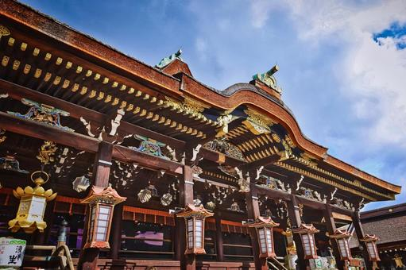

北野天満宮は、 学問の神様として知られる 菅原道真公を祀る全国天満宮の総本社です。 受験シーズンには全国から 多くの参拝者が訪れます。

北野天満宮とは？
947年に創建された歴史ある神社です。 「天神さん」の愛称で親しまれ、 京都市民にも深く愛されています。
努力する人の背中を押してくれる、
京都を代表する学問の神社です。
見どころ
・三光門
・本殿
・御土居のもみじ苑
・梅苑
おすすめ写真スポット
楼門から本殿へ続く参道や、 梅苑の風景が人気です。 春には梅の花が境内を彩ります。
おすすめの季節
特に2月から3月にかけての梅の季節が有名です。 約1500本もの梅が咲き誇り、 京都屈指の梅の名所として知られています。
毎月25日の天神市
毎月25日には「天神市」が開かれます。 骨董品や古着、 京都グルメなどが並び、 観光客にも人気です。
周辺グルメ
北野天満宮周辺には 老舗和菓子店や甘味処が点在しています。 参拝後に抹茶スイーツを楽しむのもおすすめです。
← トップページへ戻る